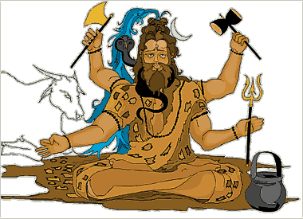

|

Shiva is one of the most important gods in the Hindu religion. He has a complex character and appears in different ways to express different parts of his character. One of the most common ways that Shiva appears is as Nataraja, or the Lord of the Dance. As Nataraja, Shiva expresses the creative and destructive aspects of the universe. Thus, Nataraja represents the eternal cycle of time. |